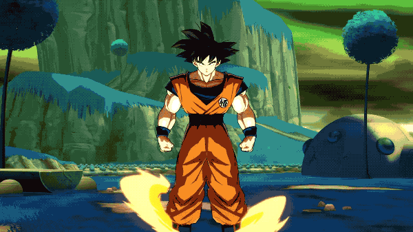

News
Atari is realeasing a new console?!
Just how it was stated on the heading folks, atari is working on it's first console in 20 years!, Atari has informed that it's back into the hardware business,We’re back in the hardware business,” Atari CEO Fred Chesnais said in an interview with GamesBeat. He said it is based on PC technology, and Atari is currently working on the design to be revealed at a later date. "Credit to: Atari is working on a new video game console
Xbox one x
The brand new console of Microsoft has made an explosive appeareance with a value of 499.99 dollars in gamestop!, "the worlds most powerful console,featuring 6 Teraflops of graphical processing power, true 4K gaming, and compatibility with Xbox One games and accessories."Upgraded CPU: The Xbox custom 8-core AMD CPU has a clock speed of 2.3GHz. More memory: The addition of 12GB GDDR5 of graphic memory allows for faster load times, grander experiences, and bigger worlds. Graphics like never before: A 6 Teraflop GPU provides the power for the Xbox One X to present 4K environments, characters, and details. Memory bandwidth: With a memory bandwidth of 326 GB/sec, the Xbox One X has the power to keep up with anything your game collection demands. Advanced cooling: The Xbox One X steps up its cooling capabilities, using liquid cooling to keep temperatures (and fan volume) under control during even the most intense moments. Backwards compatibility: All of your Xbox One gear works exactly the same with an Xbox One X. No adapters required! Credit to: Gamestop:xbox-one-x

Upcoming Video games!
A Way Out
Nobody outside of EA and Hazelight Studios had ever heard of A Way Out prior to E3 2017, but it ended up being one of the most noteworthy games featured during this year's show. A Way Out is a co-op action title displayed entirely through the lens of a split-screen. While the game’s early sections will focus on completing an elaborate prison break, later levels will seemingly cast both players as fugitives.
Dragon Ball FighterZ
Hearing that another studio is making a new Dragon Ball Z fighting game is a lot like finding out you’re out of toilet paper. It's a potentially disastrous situation that you quite honestly should have seen coming. However, Dragon Ball FighterZ is not just another Dragon Ball fighting game, and that’s because it’s not being made by just another studio. No, Dragon Ball FighterZ is a high-octane, beautifully rendered, pure 2D fighting game from the makers of the Guilty Gear series. With its impressive roster of memorable characters and 3 vs. 3 team system, Dragon Ball FighterZ is shaping up to be a fascinating alternative to the Marvel vs. Capcom series for those looking for a pure fighting title that emphasizes the insanity of epic encounters.
World of Warcraft: Battle For Azeroth
2016's World of Warcraft: Legion arguably did more to revitalize the 13-year-old MMO than the last few expansions combined. Through a combination of fan-requested features and innovative new concepts, Blizzard used Legion as proof that World of Warcraft still has plenty of life left in it. Now, they look to top their considerable efforts with the release of the game's next expansion, Battle for Azeroth.
Top 10 video game consoles of all time-Personal opinion-
| Name | Position | Info | Releasing date |
|---|---|---|---|
| Xbox one s | #1 | a revision of the original Xbox One hardware with a streamlined form factor. Its new casing is 40% smaller than the original design, and supports vertical orientation with a stand. The capacitive power and eject keys were replaced by physical buttons,the side USB port and controller sync button were moved to the front of the console, and its power supply is integrated into the console's casing rather than sitting externally. Xbox One S requires a USB adapter to attach a Kinect sensor, as it no longer includes the proprietary port used on the original model. | June 13, 2016 |
| Ps4 pro | #2 | It is an upgraded version of the PlayStation 4 with improved hardware to enable 4K rendering and improved PlayStation VR performance, including an upgraded GPU with 4.2 teraflops of processing power and hardware support for checkerboard rendering,[192] and a higher CPU clock. Games marketed as PS4 Pro Enhanced may be optimized for higher graphics quality, resolution, or HDR support when running on PS4 Pro. | November 10, 2016 |
| Nintendo Switch | #3 | The Nintendo Switch[b] is the seventh major video game console developed by Nintendo.Nintendo considers the Switch a "hybrid" console; it is designed primarily as a home console, with the main unit inserted onto a docking station to connect to a television. Alternatively, it can be removed from the dock and used similarly to a tablet computer through its LCD touchscreen, or placed in a standalone tabletop mode visible to several players. | it was unveiled in October 2016 and was released worldwide on March 3, 2017 |
| Wii-u | #4 | The Wii U is a home video game console developed by Nintendo, and the successor to the Wii.The Wii U is the first Nintendo console to support HD graphics. The system's primary controller is the Wii U GamePad, which features an embedded touchscreen, and combines directional buttons, analog sticks, and action buttons. | The console was released in November 2012 |
| Ps3 | #5 | The PlayStation 3 (PS3) is a home video game console developed by Sony Computer Entertainment. It is the successor to PlayStation 2, and is part of the PlayStation brand of consoles. | It was first released on November 11, 2006, in Japan,[8] November 17, 2006, in North America, and March 23, 2007, in Europe and Australia. |
| Nintendo 3Ds | #6 | The Nintendo 3DS[a] is a handheld game console produced by Nintendo. It is capable of displaying stereoscopic 3D effects without the use of 3D glasses or additional accessories. | June 15, 201 |
| Psp | #7 | A handheld game console developed by Sony Computer Entertainment.he PlayStation Portable became the most powerful portable system when launched, just after the Nintendo DS in 2004. It was the first real competitor to Nintendo's handheld domination, where many challengers, such as SNK's Neo Geo Pocket and Nokia's N-Gage, failed.Its GPU encompassed high-end graphics on a handheld, while its 4.3 inch viewing screen[13] and multi-media capabilities,such as its video player and TV tuner, made the PlayStation Portable a major mobile entertainment device at the time. It is the only handheld console to use an optical disc format, Universal Media Disc, as its primary storage medium. | December 12, 2004 |
| Gameboy-advance | #8 | is a 32-bit handheld video game console developed, manufactured and marketed by Nintendo as the successor to the Game Boy Color.As of June 30, 2010, the Game Boy Advance series has sold 81.51 million units worldwide.[4] Its successor, the Nintendo DS, was released in November 2004 and is also compatible with Game Boy Advance software. | It was released in Japan on March 21, 2001, in North America on June 11, 2001, in Australia and Europe on June 22, 2001, and in mainland China on June 8, 2004 |
| Nintendo Ds | #9 | The DS, short for "Developers' System" or "Dual Screen",[4] introduced distinctive new features to handheld gaming: two LCD screens working in tandem (the bottom one featuring a touchscreen), a built-in microphone, and support for wireless connectivity.[5] Both screens are encompassed within a clamshell design similar to the Game Boy Advance SP. The Nintendo DS also features the ability for multiple DS consoles to directly interact with each other over Wi-Fi within a short range without the need to connect to an existing wireless network. Alternatively, they could interact online using the now-closed Nintendo Wi-Fi Connection service. Its main competitor was Sony's PlayStation Portable as part of the seventh generation era | November 21, 2004 |
| Game cube | #10 | The sixth-generation console is the successor to the Nintendo 64 and competed with Sony Computer Entertainment's PlayStation 2 and Microsoft's Xbox.The GameCube is the first Nintendo console to use optical discs as its primary storage medium. The discs are similar to the miniDVD format; as a result of their smaller size and the console's small disc compartment, the system was not designed to play standard DVDs or audio CDs. The console supports online gaming for a small number of its titles via the broadband or modem adapter and connects to the Game Boy Advance via the link cable, allowing players to access exclusive in-game features using the handheld as a second screen and controller. | JapanSeptember 14, 2001|Australia:May 17, 2002|North america:November 18, 2001 |